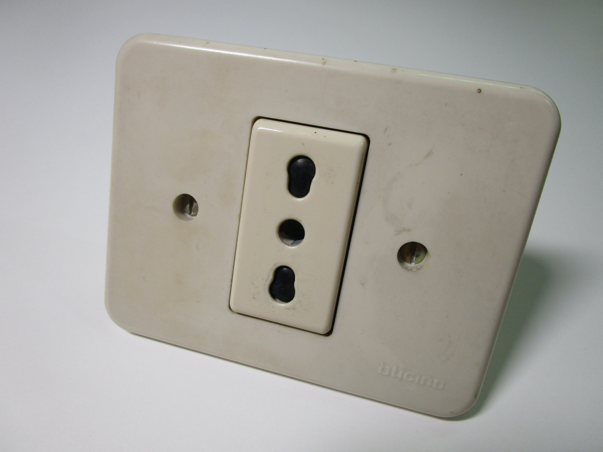

Electrical safety around the world
This page documents the safety features found in modern-day electrical items, how they function, and the dangers posed by older or non-compliant items which lack these features.
Note that, ideally, all of these protections should be present regarardless of the voltage in use inside a specific country: mains voltage, be it 100 or 240 volts, can and will kill you and shouldn't be used as an excuse to be careless in the design of an electrical system.
This is a more general overview of various safety features found around the world; a separate page is present to document the evolution of electrical safety in Italy specifically.
Physical design of plugs and sockets
Dangers present in older items
The plugs shown below are an example of the dangers presented in older electrical items:


1. Old socket with exposed metal contacts. It is trivially easy to touch the metal contacts inside, and thus receive an electric shock, simply by using a finger or an item made of metal.
2. Partially inserted plug; the pins are already making contact and thus live, but a significant portion of them is still exposed and very easy to touch when inserting a plug, especially if not looking.
Safety shutters on power sockets
Safety shutters as found on power outlets prevent someone from coming in contact with a live contact, even if using some sort of metal object like a screwdriver. They also prevent someone from inserting only one pin inside a socket and thus making the other one live.
The adoption of shutters isn't universal even within Europe, however they'll generally be found in power strips and extension cords, and they're mandatory in a few countries such as Italy. In the US sockets with them have recently started being mandatory on new builds, and they're referred to as TR (tamper-resistant), although they're not common on power strips or extension leads.
{kind=link}

Shutter mechanisms can work in various ways, but the key feature found in all of them is that an electric shock
should only be possible if using two objects: one to open the shutters and one to actually reach the live contacts.
Three different types of shutter mechanisms are shown here, each functioning in a slightly different way:


The operation mode of all of these is the same: the two pins of the plug will open the shutters if pushed at the same time, while a single object wouldn't be able to make them open due to friction.
The main difference between the three mechanisms is the way the shutters move once a plug is inserted: in the first one they simply rotate to the side, while on the second and third one they slide either to the side or downwards.
A different style of shutter mechanism is in use on certain 3-pin plugs and sockets, namely the UK ones (BS1363), where this is required, and in modern-day BS546 ones, but also on some Australian-style sockets found in China, where they're only used for devices that require an earth connection.
This style of mechanism is technically better, as if someone were to get a shock they'd be in contact between live and earth, allowing an RCD to trip. However, it also means that all plugs have to have an earth pin, even if it's not required by the device, which can make the plugs bulky.
Notably, some higher-end British sockets use both styles of mechanism, with the shutters only opening if the earth pin is in place and then by the simultaneous push of both the live and neutral pins.
Sleeved pins or recessed sockets


Circuit design and other features
Protective earth (ground) connection
This important safety feature ensures that, if due to some fault the chassis of a metal-cased appliance becomes live, the fuse or breaker (or an RCD, for low-impedance faults) will trip, thus preventing someone from coming in contact with the live appliance and risking a potentially fatal shock.
Additional protection
Additional protection is named that way because it's in addition to all the other ways to protect a user from electric shocks, and shouldn't be the only form of protection.
Residual Current Device (RCD) / Ground Fault Circuit Interrupter (GFCI)


{kind=link}